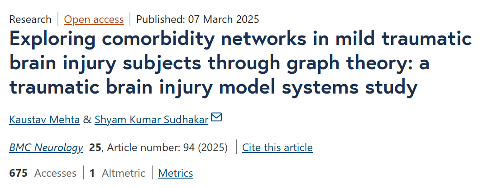
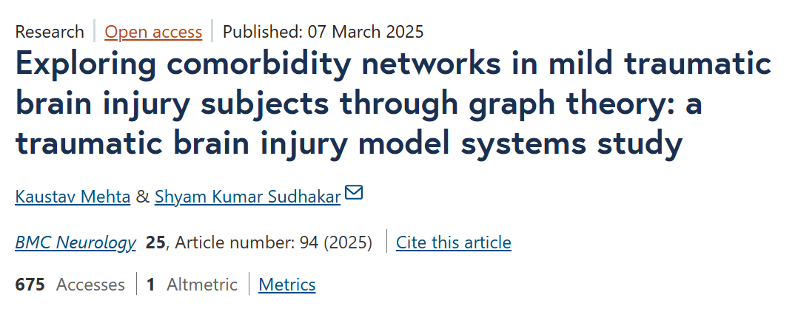

Recent Publication:
(Click on the image)
I'm an Assosiate Professor and Neuroscientist at Krea University, India. I was previously a post-doctoral scholar at the University of Michigan, Ann Arbor (advised by Prof. Omar Ahmed). I hold a PhD from the University of Antwerp (advised by Prof. Erik De Schutter).
I aim to understand the cellular, molecular, and network-level mechanisms underlying pathological brain states through biophysically detailed computational modeling. I am interested in studying traumatic brain injuries (TBI) with the aim of identifying novel drugs for neuroprotection and computational biomarkers of injury severity and disease progression.
(Click on the image)
